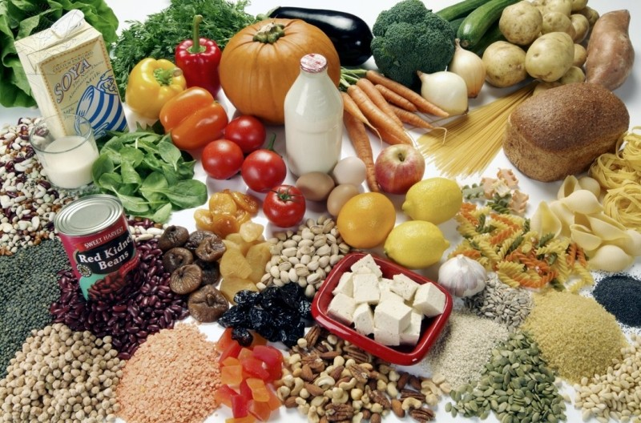

You can switch your homes’ energy provider to one that supplies electricity generated by renewable sources (“Actions”). Some examples of renewable sources of energy are solar panels, wind turbines, hydroelectric power stations, and geothermal plants. Switching from fossil-fuel burning energy providers to clean alternatives can reduce your carbon footprint by up to 1.5 tonnes of carbon dioxide per year (“Actions”).

Wind Turbines. Photo. Britannica ImageQuest, Encyclopædia Britannica, 25 May 2016. quest.eb.com/images/167_4009717. Accessed 11 Oct 2024.
Instead, take public transport, or even just bike or walk (“Actions”). Living car-free can have a massive impact on the environment, and can reduce your carbon footprint by up to 2 tonnes of carbon dioxide per year (“Actions”). Alternatively, you could switch to an electric car, which can also save up to 2 tonnes of carbon dioxide per year (“Actions”).
Train. Photography. Britannica ImageQuest, Encyclopædia Britannica, 25 May 2016. quest.eb.com/images/158_2464928. Accessed 11 Oct 2024.
Even if you become car-free, the good that does for the environment is cancelled out just by taking one long-haul return flight (“Actions”). This is because airplanes emit incredibly high amounts of carbon dioxide, and if you fly return long-haul, your carbon footprint, just from the flight, can be up to 2 tonnes of carbon dioxide (“Actions”).
Airplane. Photograph. Britannica ImageQuest, Encyclopædia Britannica, 25 May 2016. quest.eb.com/images/139_1891646. Accessed 11 Oct 2024.
Animals emit huge amounts of carbon dioxide, from trees cut down for their land, or even just the methane emitted directly from cows (“Actions”). This means that becoming vegetarian can decrease your carbon footprint by 500kg of carbon dioxide per year, but if you become vegan, then it is decreased by nearly a tonne (“Actions”).

Vegetarian foods. Photography. Britannica ImageQuest, Encyclopædia Britannica, 25 May 2016. quest.eb.com/images/132_1254835. Accessed 11 Oct 2024.